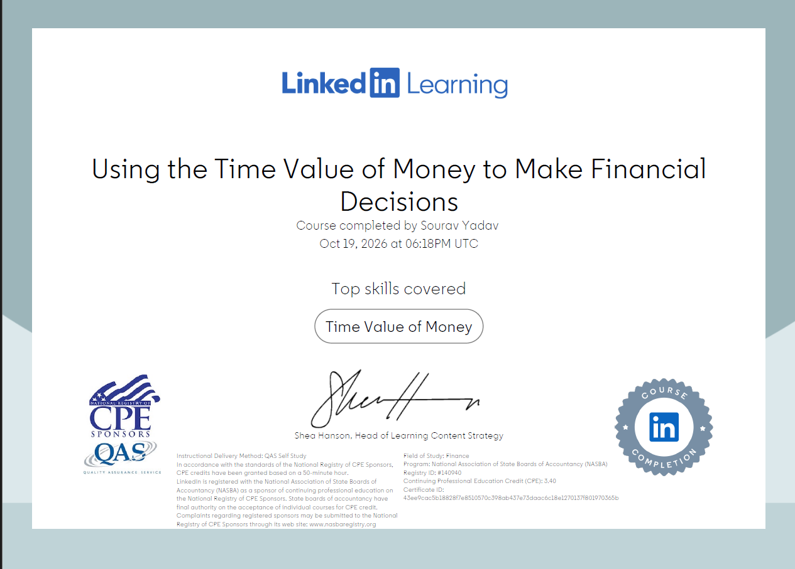
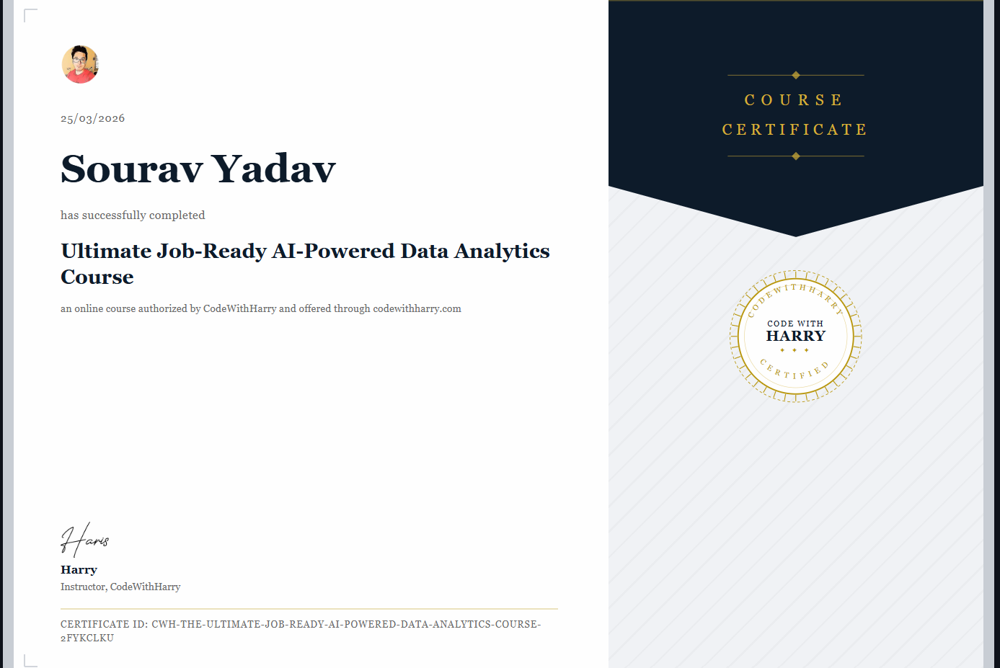
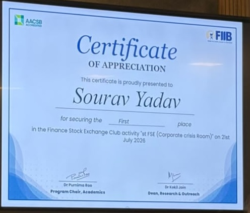
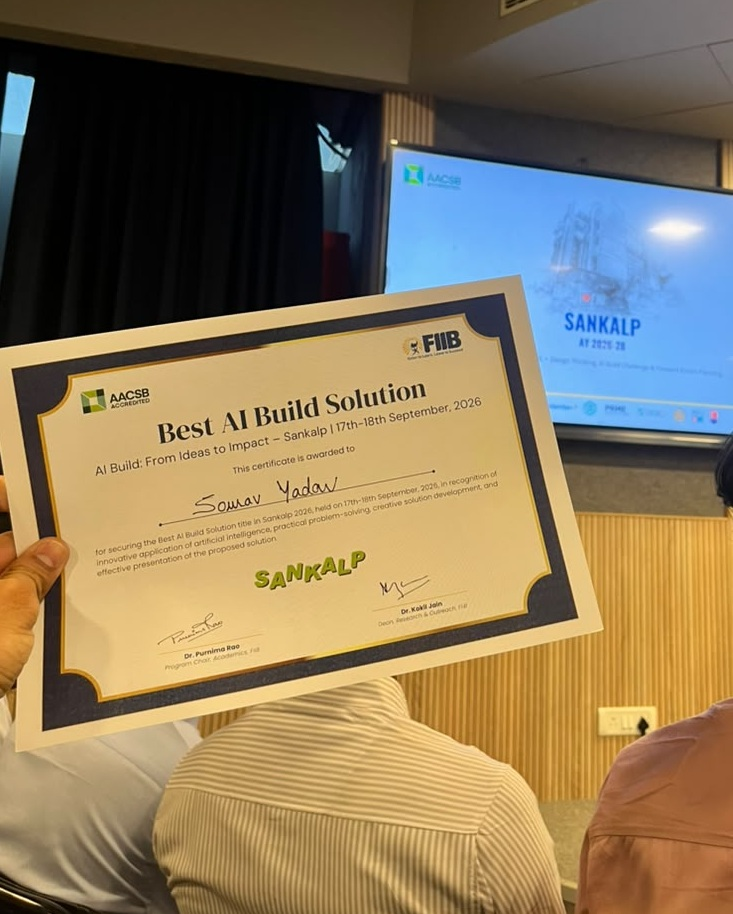

PORTFOLIO
Hello, I’m
Sourav Yadav. FINANCIAL MANAGEMENT
A curious mind. A financial lens. Exploring finance through data, ideas, and hands-on projects.
↗ EXPLORE MY WORK◎ NEW DELHI, INDIA
FINANCE ✦ DATA ✦ ANALYSIS ✦ CURIOSITY ✦ CONTINUOUS LEARNING
Pause motion Ⅱ THE WAY I SEE IT
I’m building a career at the intersection of finance and data-driven decisions. ✦ Finance ↗ Data ＋ Curiosity ▦ Excel
01 / THE WORK
Selected projects. Financial analysis and useful information, brought to life through dashboards.
⌕ Search projects and stories 2 stories
All stories 02 Data analysis Finance Dashboards
Showing 2 projects
No stories match that search.
Show all stories ↗
HYUNDAI MOTOR INDIA LTD.
Financial↗ Understand the business.
Financials Cash flow Valuation
Project cover · explore the dashboard below
01 / FINANCIAL ANALYSIS INDEPENDENT PROJECT
Hyundai Motor India Ltd.Financial Dashboard THE BUSINESS BEHIND THE NUMBERS
My financial dashboard brings Hyundai Motor India’s financial statements, cash flow, returns, ownership, and valuation into one research workspace.
Financial analysis Cash flow Valuation
By Sourav Yadav Project story
Explore the published dashboard, financial sections, and source notes.
DELHI / HEALTHCARE
ICU+ Hospital information.
Discovery Delhi Dashboard
Project cover · explore the dashboard below 02 / HEALTHCARE DASHBOARD INDEPENDENT PROJECT
Delhi Hospital ICU Finder. A FOCUSED HEALTHCARE DASHBOARD
A dashboard I created around finding hospital ICU information in Delhi. This project explores how a focused interface can make information easier to navigate.
Dashboard Healthcare information Delhi
By Sourav Yadav Project story
Explore the dashboard through the project link.
✳ Still curious. Still building. More projects, supporting files, and reflections will join this journal as my work develops.
02 / THE FOUNDATION
Education & skills 2026 — 2028 · PURSUING PGDM, Financial Management Fortune Institute of International Business
2020 — 2023 Bachelor of Arts Shaheed Bhagat Singh College
MY TOOLKIT EXCEL PIVOT TABLES VLOOKUP SQL BASIC PYTHON MS OFFICE GOOGLE WORKSPACE VS CODE
03 / MY APPROACH
How I think 01 Understand ＋ Start with the question and the information needed to answer it.
02 Organise ＋ Bring structure to information so patterns are easier to explore.
03 Analyse ＋ Use tools such as Excel to turn data into a clearer picture.
04 Communicate ＋ Present the thinking through dashboards, charts, and clear explanations.
05 Keep learning ＋ Build on feedback and stay curious about finance and technology.
✦ Finance.perspective. My early experience includes academic and team coordination, organising information, and supporting team activities.
LET’S START A CONVERSATION ↗ 04 / LEARNING & RECOGNITION
Credentials & awards. Course completion certificates and FIIB awards.
Certifications FINANCE & DATA ANALYTICS

View certificate ↗ LINKEDIN LEARNING 19 OCT 2026
Using the Time Value of Money to Make Financial Decisions Course completion · Time Value of Money
Download certificate ↓ 
View certificate ↗ CODEWITHHARRY 25 MAR 2026
Ultimate Job-Ready AI-Powered Data Analytics Course Course completion · AI-powered data analytics
Download certificate ↓
Awards & recognition FORTUNE INSTITUTE OF INTERNATIONAL BUSINESS

View award ↗ FIIB · FINANCE STOCK EXCHANGE CLUB 21 JUL 2026
First Place Certificate of Appreciation for securing first place in the club activity.
Download award ↓ 
View award ↗ FIIB · SANKALP 2026 17–18 SEP 2026
Best AI Build Solution Recognition for AI application, practical problem-solving, creative solution development, and presentation at Sankalp 2026.
Download award ↓ Certificate images are provided as supporting evidence. Issuer verification links: to be added.
× PROJECT 01 / FINANCIAL ANALYSIS
Hyundai Motor India Ltd.. An independent research dashboard for exploring the company’s financial performance, cash generation, and valuation.
01 Purpose 02 Features 03 Explore
Understand the business behind the numbers. I created this dashboard to bring Hyundai Motor India’s financial information into a structured, interactive research workspace. It connects performance trends with cash flow, returns, and valuation.
Explore the financial picture. Financial statements and trends Review annual and quarterly information, revenue, and margins.
Cash flow, returns, and ownership Explore cash generation, debt, efficiency, and the ownership section.
Research controls Switch between consolidated and standalone views, choose a history window, and explore the valuation lab.
A published financial research dashboard. The site includes interactive charts, financial sections, downloads, and source and methodology notes. Open the dashboard to explore its current data and assumptions.
An independent portfolio project. Data dates and methodology are documented within the dashboard.
Explore Financial Lens ↗